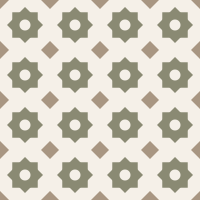
Tile
Kitchens · Bathrooms · Lobbies · Pools
A construction scales from a single backsplash to a full lobby floor without losing its proportions — because every line derives from one radius.
Chapter One · Geometry
GeoMera Atelier speaks one language — geometry — in one palette, taken only from nature. This page explains where that language comes from, why it has endured for thousands of years, and how it becomes the tile, furniture and textiles we create.
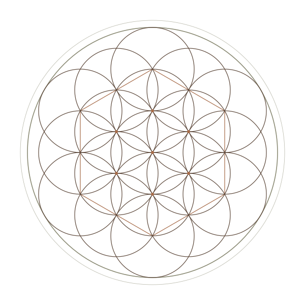
Geometry is the structure.
Every design is constructed, not drawn — a compass, a straightedge and a rule followed to its end.
Nature is the palette.
Colours are extracted only from the natural world — stone, soil, leaf and light — and from the site itself.
One language, every surface.
The same construction can become a lobby floor, a bathroom wall, a table, a rug or a cushion.
What is sacred geometry?
For most of history, the master builders of Egypt, Greece, Persia and the Islamic world designed with a compass and a straightedge. The straightedge had no markings. Nothing was measured: every length, angle and proportion was found by drawing circles and joining the points where they met.
That is the heart of what is called sacred geometry. The figures were considered sacred because they were not invented — they were discovered. Draw the same circle, follow the same rule, and the same forms appear, in any century and any country. To many traditions this made them a glimpse of the order behind creation itself.
Below, follow that rule step by step, from a single circle to the five solids Plato believed the world was made of.
Each step uses only the radius of the first circle.
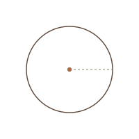
One turn of the compass. Its radius becomes the only unit of measure for everything that follows — which is why the finished pattern is always in proportion with itself.
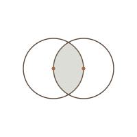
A second circle drawn through the centre of the first. The almond-shaped overlap holds the proportion √3 — the key to the equilateral triangle and the hexagon.
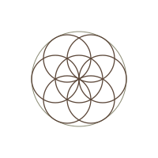
Walk the compass around the first circle: exactly six more fit, no more and no less. A six-petalled rosette appears — and with it, unasked, the hexagon.
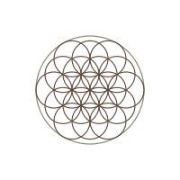
Keep placing circles on every new intersection: nineteen in all. Its most famous examples are drawn in red ochre on granite pillars at the Osireion in Abydos, Egypt — their age is debated, and many place them in the Ptolemaic era — yet the same figure surfaces independently across Asia, the Middle East and medieval Europe.
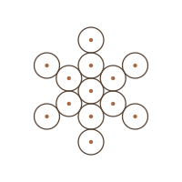
Thirteen circles taken from the flower’s own lattice, now touching rather than overlapping. The structure loosens into points that can be joined.
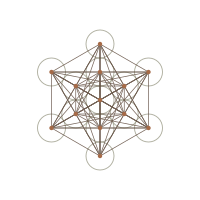
Join every one of those thirteen centres to every other: seventy-eight straight lines. Within them you can trace flat views of three Platonic solids — the tetrahedron, the cube and the octahedron. The circle has become architecture.
Only five solids can be built from identical regular faces meeting the same way at every corner. Euclid closes his Elements with them. In the Timaeus, Plato made them the atoms of the world: the tetrahedron for fire, the cube for earth, the octahedron for air, the icosahedron for water — and the dodecahedron for the cosmos as a whole.
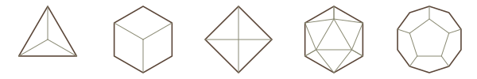
Why it endures
Trends are a matter of taste. Geometry is a matter of fact. Four reasons, each with the evidence behind it.
Bees build in hexagons. The Roman scholar Varro suspected why around 36 BCE, but it took until 1999 for the mathematician Thomas Hales to prove it: of every way to divide a surface into equal cells, the hexagonal grid uses the least total boundary. The least wax for the most honey.
A sunflower places each new seed roughly 137.5° — the golden angle — from the last. The result is two families of interlocking spirals whose counts are consecutive Fibonacci numbers, typically 21 and 34, or 34 and 55. No seed is wasted; no gap is left.
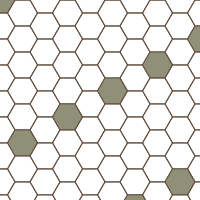
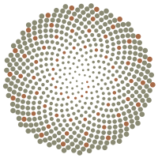
Two decades of research by physicist Richard Taylor and his colleagues suggest the human eye evolved to read nature’s repeating patterns with ease — and that looking at them measurably lowers stress. It is the most direct answer to why a well-made pattern feels calm.
Read the science of calm ↓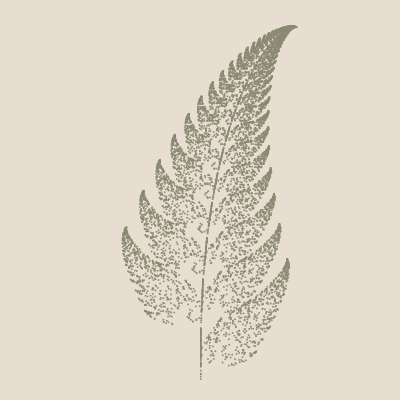
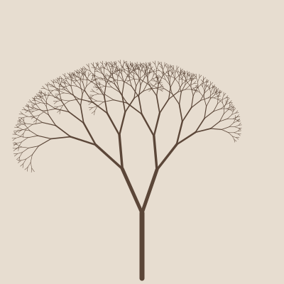
Cultures with no contact arrived at the same figures, because the figures belong to the circle, not to any culture. A few landmarks:
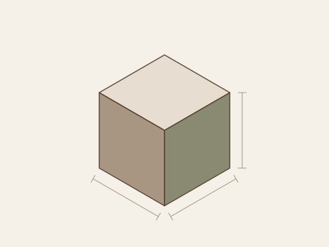
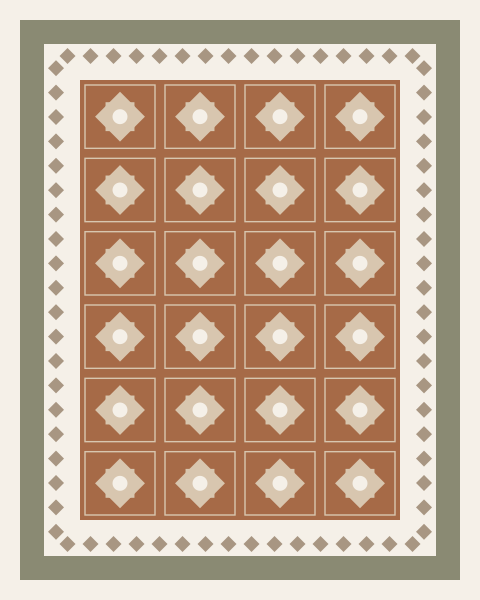
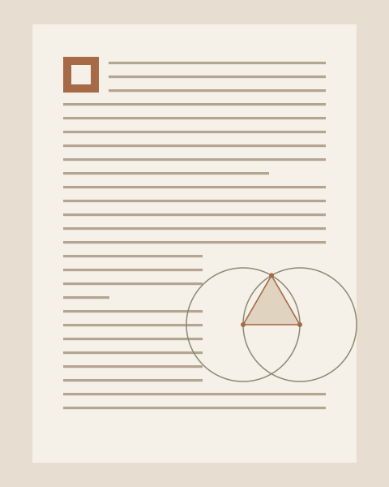
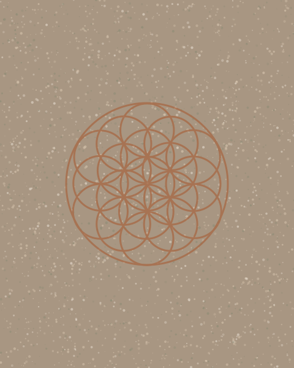
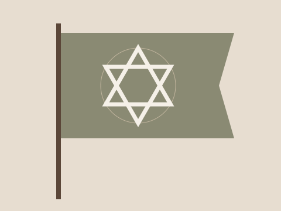
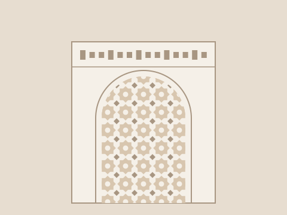
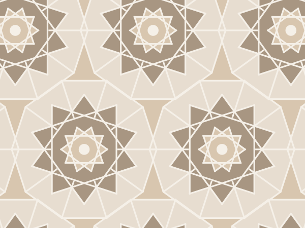
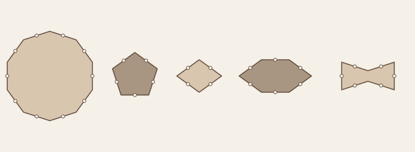
Illustrations are GeoMera Atelier interpretations in our natural palette, not reproductions of the originals.
A constructed pattern either closes perfectly or it does not close at all. There is no “nearly” in a hexagon. That precision is why a pattern laid in Isfahan six hundred years ago still looks resolved today — and why a constructed design holds together at any scale, from a cushion to a hotel lobby.
The science of calm
Richard Taylor is a physicist at the University of Oregon. His path into this field began with art: in 1999 he showed, in the journal Nature, that Jackson Pollock’s poured paintings are built from fractals — the same kind of pattern found in trees, clouds and coastlines.
That raised a larger question: why do these patterns feel so good to look at? Working with psychologists and neuroscientists, Taylor has spent more than twenty years measuring the answer — in skin, in brainwaves and in the movement of the eye itself. He calls the effect fractal fluency.
A fractal is a pattern that repeats at finer and finer scales: a branch splits into smaller branches, which split again. Scientists measure it with a single number, D — the fractal dimension — running from 1 (a smooth line) to 2 (a surface completely filled with detail).
Most natural scenes fall in a middle band, between about 1.3 and 1.5. That band, again and again, is where the research finds the strongest response.
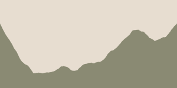
Low · D near 1Smooth. Easy, but holds little interest.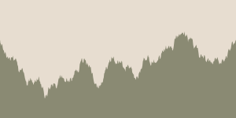
Mid · D 1.3–1.5Nature’s range. Rich, yet effortless.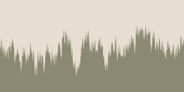
High · D ≈ 1.9Dense. Hard work for the eye.The research has already left the lab. In 2019, the commercial flooring maker Mohawk Group launched Relaxing Floors, a carpet collection developed with the Austrian design studio 13&9 and Taylor’s company, Fractals Research. Its patterns were drawn from the paths our eyes trace across natural scenery and from the branching of neurons in the eye.
Taylor’s team has also developed fractal window blinds that cast fractal shadows, patterned ceiling tiles and fractal solar panels. The direction is clear: pattern is moving from decoration toward wellbeing — in offices, hospitals, hotels and homes.
Taylor is careful on this point. Roughly a quarter of people are drawn to more intricate patterns, and roughly a quarter to smoother ones; age and whether someone grew up in a city or the countryside also play a part. He also finds that adapting nature works better than copying it literally.
Some of the brain-imaging work is still described as preliminary. But the core finding has held across skin, brainwaves, eye movement and preference: the middle range, where nature lives, is where people are most at ease.
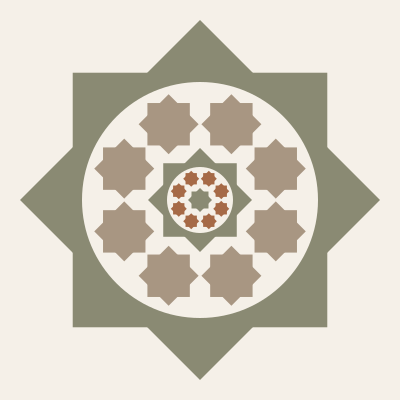
GeoMera Atelier’s own patterns have not been tested in a laboratory. These are the principles by which we apply the published research.
A note of honesty
Much of what is said about the golden ratio does not survive measurement. There is no evidence the Parthenon’s builders used it — the claim dates only to the 1850s — and the nautilus shell, though a beautiful logarithmic spiral, is not a golden one.
What is real is quieter and more remarkable: the golden angle in growing plants, the hexagon in the hive, the girih of Isfahan. GeoMera Atelier is built only from constructions that can be drawn and verified. We would rather be precise than mystical.
The palette
Geometry gives the structure; nature gives the colour. Nothing is synthetic or borrowed from fashion. For each commission, the palette is drawn from the project’s immediate surroundings — its stone, soil, planting and light.
Where it lives

Kitchens · Bathrooms · Lobbies · Pools
A construction scales from a single backsplash to a full lobby floor without losing its proportions — because every line derives from one radius.
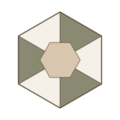
Tables · Seating · Sculptural pieces
The geometry is not printed onto the piece — it decides the piece. Silhouette, footprint and structure come from the construction itself.
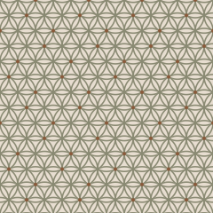
Upholstery · Curtains · Cushions · Rugs
Patterns built as true seamless repeats, so they run edge to edge across a sofa, a window or a floor — continuing the language of the oldest carpets.
Illustrations shown are teaching constructions. Commissioned designs are created for, and belong exclusively to, each client.
In Ellie’s words
I was born in Iran, and I grew up inside geometry before I knew its name.
It was everywhere — in the tilework of mosques and old houses, in carved plaster ceilings, in courtyards and gardens laid out in perfect symmetry, in the fabrics we lived with, and above all in the rugs beneath our feet. Long before I could explain it, I knew how it felt: a room built on geometry is calm.
Geometry gives me calm, connection and harmony. GeoMera Atelier is how I share it — one geometric language, in colours taken only from nature, made for one place and one client.
Read Ellie’s full story →Ellie Kashani · Founder
Commissions
For developers, hospitality and residential projects, and private clients who want a design that exists nowhere else.